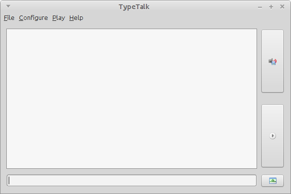

Welcome to TypeTalk.
TypeTalk is a Text to Speech frontend aimed at people with speech problems. TypeTalk uses MaryTTS in the background and includes several voices. At this moment only English voices are included.

Using TypeTalk
TypeTalk is written in Java. You need a Java Runtime Environment to run TypeTalk. You can run TypeTalk with either OpenJDK or Oracle JDK.
TypeTalk has two areas for typing. A single-row bottom text field to let you enter text. When TypeTalk pops up this text field grabs the focus and you can start typing. When you hit the enter key the text is moved to the top text area and TypeTalk speaks the words you typed. This way of using TypeTalk is similar to using a messaging program.
The top text area is meant for larger portions of text. When you hit the 'play' button on the bottom right the text is spoken to you. With the 'save' button you can save the output to a wave file. When TypeTalk encounters a word that the MaryTTS back-end cannot pronounce it shows a little popup at the top-right corner of your screen with the unpronounceable word. You can correct the text in the top text area to enable a complete message.
TypeTalk can be started with a minimized window in order to let you load it at login and have it waiting for you when you need it. With a keyboard shortcut TypeTalk will be at your service.
Configure the included voices
You can configure the voices by clicking 'Configure' - >'Configure voice'. All configuration options in the dialog show a little help button with a explanation about the effect. You can listen to the effect through a text field and play button at the bottom of the dialog.
Configure the interface
You can configure the behaviour of TypeTalk by clicking 'Configure' -> 'Configure graphical interface'. Through this dialog you can disable the splashscreen, the welcome screen at startup and whether TypeTalk should be started minimized or not. In this dialog you can also change the keyboard shortcut for toggling the visibility of the ui.
Authors
TypeTalk is created by the @raginggoblin and distributed under the Gnu Public License.
Support or Contact
Having trouble using TypeTalk? Please, take a look at our wiki. Found a bug or having a feature request? Please, file an issue at our github page.